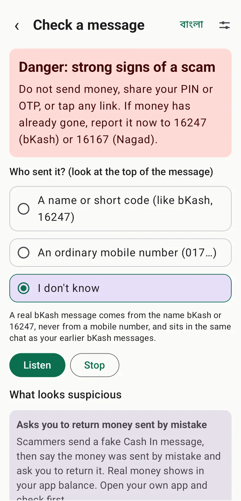
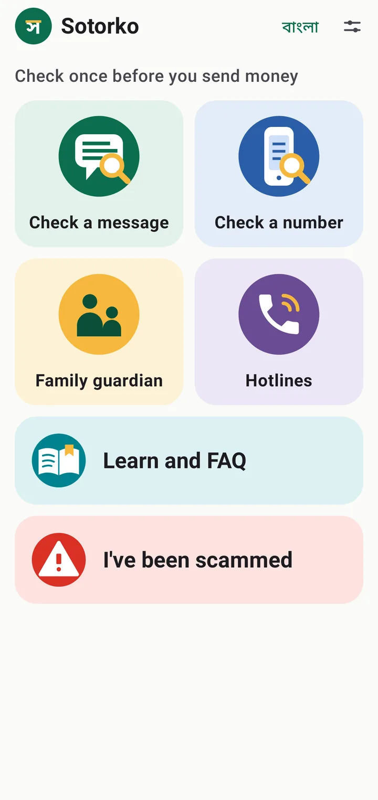
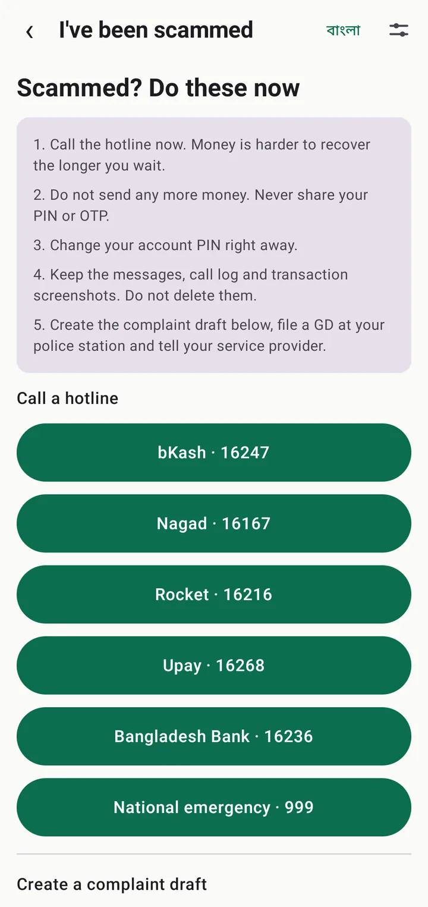
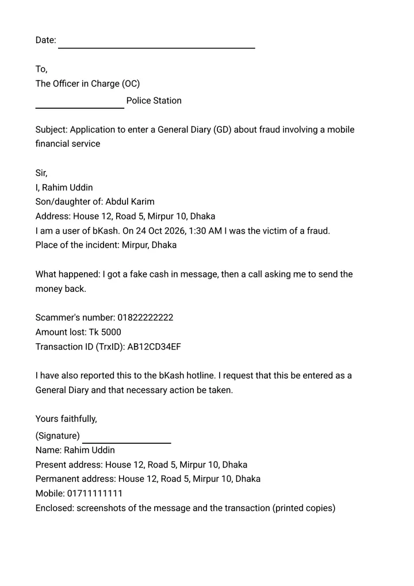
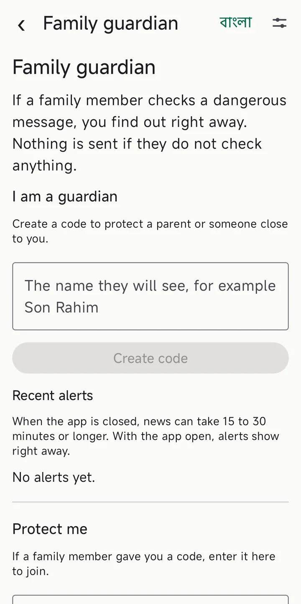

Check a message
Finds the classic warning signs on your phone: asking for your PIN or OTP, "sent by mistake, send it back", prize bait and fake links.
Sotorko checks suspicious messages and numbers on your own phone, explains the warning signs in plain Bangla and reads them aloud. It helps you spot fake messages sent in the name of bKash, Nagad or your bank.

Source: Policy Research Institute, "State of DFS Consumer Protection in Bangladesh" (survey of 7,279 users in 45 districts, published around 2022).
Share it straight from your messages app to Sotorko, or paste the text.
A name or short code, or an ordinary mobile number: one tap, nothing to type.
See how risky it looks, with the reasons, in Bangla. The app can read it aloud.




The message and details in the pictures are made-up examples. They show nobody's real information.
See how many people have reported a number, and report one yourself. These are unverified reports, not a verdict on anyone.
Know when your parents check a dangerous message. Both sides agree first, and either can pause or stop it at any time.
The steps to take right now and one-tap calls to the hotlines. Type your name, father's name and address once and the police GD application fills itself in, ready to print or save as a PDF on one page. You also get a complaint to your service provider and details ready to paste into the police's official Online GD form.
bKash 16247, Nagad 16167, Bangladesh Bank 16236 and national emergency 999, one tap away.
A fake "Cash In" message arrives, then a call: "I sent the money by mistake, please return it."
What to doOpen your own app and check your balance first. Real money shows there. If it is not there, send nothing.
Someone pretends to be from bKash, Nagad or your bank and asks for your PIN or OTP.
What to doThey never ask for these. Tell no one, and hang up.
"Congratulations, you won!" or "Tap this link to get your allowance."
What to doDo not tap unknown links. You never need a fee or PIN to receive a prize or allowance.
"Update your KYC now or your account will be blocked."
What to doCall the official hotline yourself, not the number in the message.
No. The app does not ask for SMS, call log or contacts permission. Only the message you share or paste is checked.
No. Sotorko looks for known scam patterns. A new kind of scam, or one worded differently, can slip past. If in doubt, call the hotline.
No. Only if you join "Family guardian" with your consent, and a message is found dangerous, that message goes to the guardian you chose.
No. An online GD is filed in the police's official Online GD system, with your own national ID, a live photo and an OTP. Sotorko writes what to say and shows you the steps.
We have not found a single official form. The application is a draft in the usual letter style: addressed to the Officer in Charge, with a subject, what happened, a request and your name and address. If your station has its own form, use that; the draft still helps you fill it in.
No. What others report is shown only as "reports", unverified claims. No verdict is given about anyone.
No. Sotorko is an independent app. bKash, Nagad and other names belong to their owners.
It is being prepared for Google Play. Email us to hear when it is out.
Azimul Kabir Apu, an independent developer.